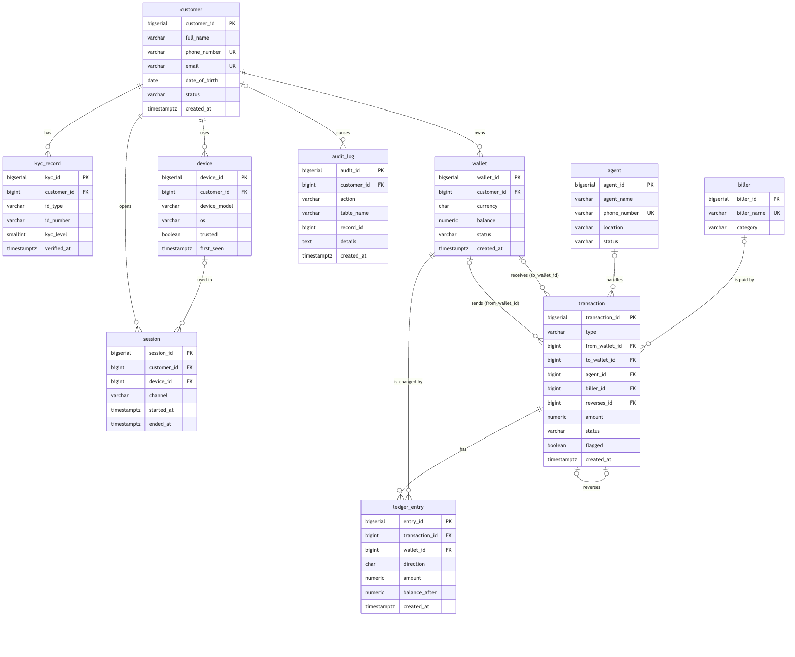
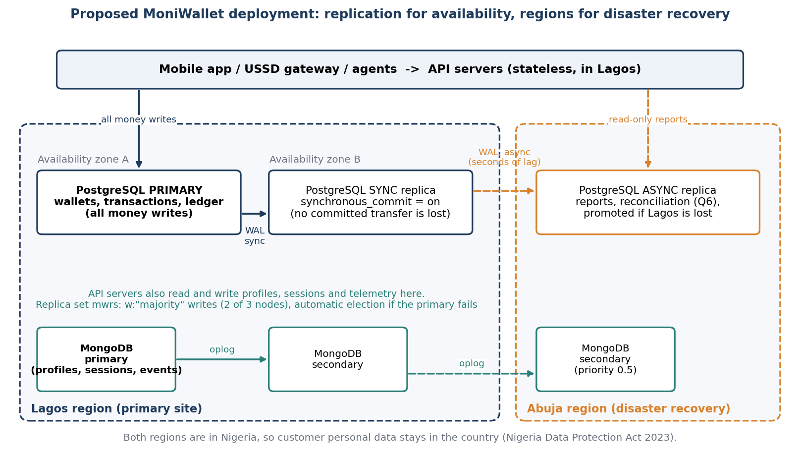
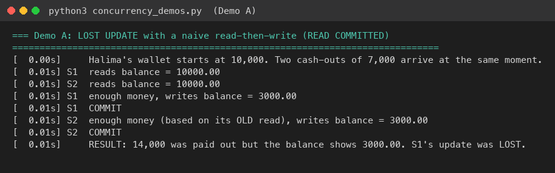
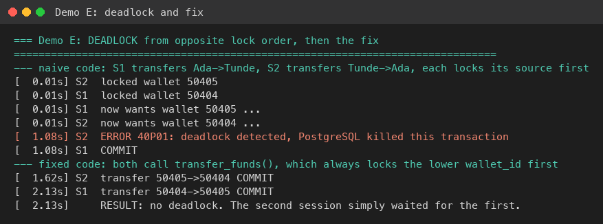
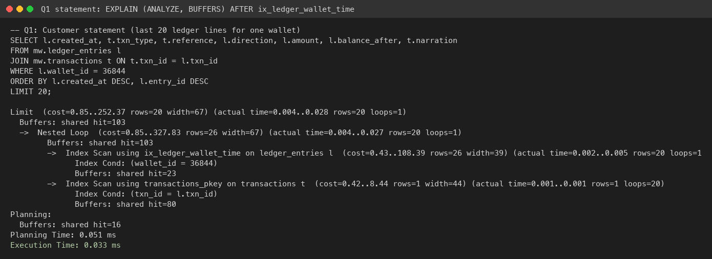
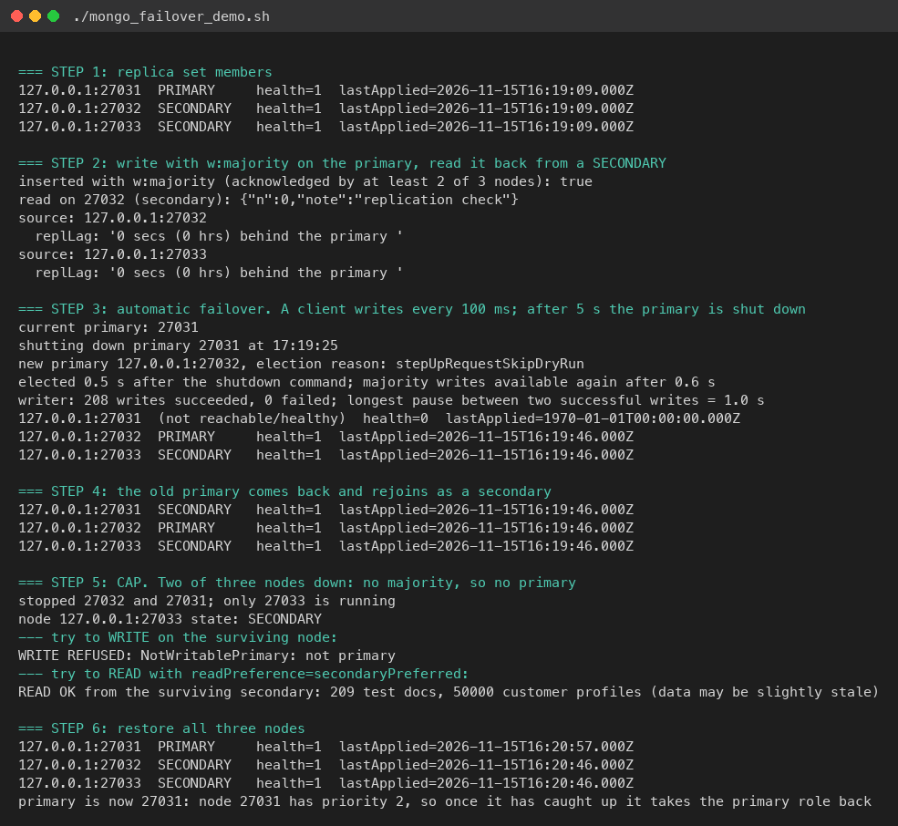

MIT 8103 Advanced Database Systems: First Semester Continuous Assessment (Individual Practical Database Portfolio)
| Full name | Abdullateef Opeyemi Bakare | Student ID | (withheld in the public copy) |
| Miva email | (withheld in the public copy) | GitHub | github.com/Bakare-Opeyemi/advanced-database-portfolio |
OpeLat Wallet is a simulated Nigerian mobile money operator (all data is generated). Customers hold a wallet linked to their phone number. They fund it from a bank or an agent, transfer money, pay bills and withdraw cash at agents. Users: customers (app and USSD), agents, support staff, compliance officers (KYC and anti-money-laundering), finance staff and auditors. Major data: customers and KYC documents, wallets and balances, transactions, a double-entry ledger, agents, billers, AML flags, devices, sessions and app telemetry. Key operations: register and verify a customer, fund a wallet, transfer, pay a bill, reverse a failed transaction, produce a statement, flag suspicious activity and reconcile balances. The same case study and the same IDs are used in all five activities.
| Activity | What was built | Key evidence |
|---|---|---|
| 1. Design and modelling | 10-table PostgreSQL schema with a double-entry ledger, surrogate keys plus protected natural keys, CHECK rules per transaction type, an audit trigger and an integrity view. Normalised to 3NF, with two documented, controlled redundancies (stored balance, balance-after). | ER diagram; all 9 bad-data tests rejected by the intended constraint. |
| 2. Query optimisation | 50,000 customers, 450,000 transactions, 1,072,441 ledger lines. 8 business queries measured with EXPLAIN (ANALYZE, BUFFERS), median of 7 runs, before and after targeted indexes: composite, trigram GIN, partial, BRIN and covering. | Statement 62.2 to 0.033 ms; stuck-payments alert 42.4 to 0.004 ms; biller report 45.2 to 2.9 ms (Index Only Scan). BRIN is 24 kB against 9.9 MB for a B-tree. |
| 3. Transactions and concurrency | transfer_funds() locks both wallets in id order, checks after locking, and writes the transaction, ledger and balances atomically. Demos: commit, rollback, savepoint, lost update, FOR UPDATE, REPEATABLE READ with retry, non-repeatable read, deadlock. | Lost update reproduced (14,000 paid, balance 3,000) and fixed; deadlock 40P01 removed by lock ordering; 16 threads, 4,000 attempts: money conserved, 0 negative balances. |
| 4. NoSQL models | MongoDB 7: profiles as documents with embedded devices and $jsonSchema validation; sessions as key-value with a TTL index; telemetry as a time-series collection; transfers as a graph traversed with $graphLookup. | Login lookup 50,000 docs to 1 doc examined; fraud query finds all 6 planted takeover attempts; measured time-series design fix: 4.6x less storage. |
| 5. Distributed and cloud | PostgreSQL primary and hot standby (streaming, slot, sync and async), a 3-node MongoDB replica set, monthly partitioning, CAP discussion, a sharding plan and a two-region deployment in Nigeria. | Replay lag 10 ms; sync commit blocks 5 s with the replica down; promotion 129 ms; Mongo election 0.6 s with 0 of 208 writes lost; no-majority writes refused. |






Design choices. I separated the business event (transactions) from the money movement (ledger_entries) so that every transfer must balance. This made later work easier: a single view proves integrity after every experiment, including the stress test and the failover. I kept money in PostgreSQL and moved profiles, sessions and telemetry to MongoDB, because each store is strongest at different things (polyglot persistence).
Challenges. Several results looked right at first but were wrong, and checking them taught me the most. A name search showed no gain from an index, because common surnames are found quickly anyway, so I changed it to a realistic rare search (last six phone digits). My first MongoDB data generator repeated patterns and produced fake fraud signals. My first time-series design created 144,408 buckets for 160,055 events. A replication test exposed that transfer_funds depended on the session's search_path, which I fixed by pinning it in the function.
Lessons learned. The default isolation level does not stop a read-then-write race. Lock ordering removes deadlocks completely. An index must match a query's filter and its sort. Synchronous replication is a deliberate choice of consistency over availability: I watched a commit block for five seconds, and that is the right behaviour for money but not for telemetry.
Tool: Claude (Anthropic), 21 October to 15 November 2026. Used for: writing the scripts, generating the synthetic data, running the experiments, and drafting the documentation. Verification: every script was run on PostgreSQL 14 and MongoDB 7, all figures come from the saved output in each evidence/ folder, and the built-in integrity checks pass. I reviewed the work and can explain every part of it.
Brewer, E. (2012) 'CAP twelve years later: How the "rules" have changed', Computer, 45(2), pp. 23-29.
Elmasri, R. and Navathe, S. B. (2016) Fundamentals of Database Systems. 7th edn. Pearson.
Federal Republic of Nigeria (2023) Nigeria Data Protection Act, 2023.
Kleppmann, M. (2017) Designing Data-Intensive Applications. O'Reilly Media.
Miva Open University (2026) MIT 8103 Advanced Database Systems course materials, Weeks 1-6.
MongoDB, Inc. (2024) MongoDB Manual 7.0. Available at: https://www.mongodb.com/docs/v7.0/
PostgreSQL Global Development Group (2024) PostgreSQL 14 Documentation. Available at: https://www.postgresql.org/docs/14/